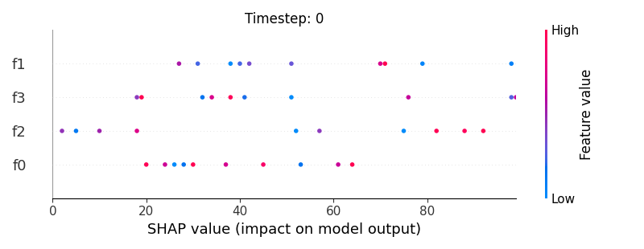
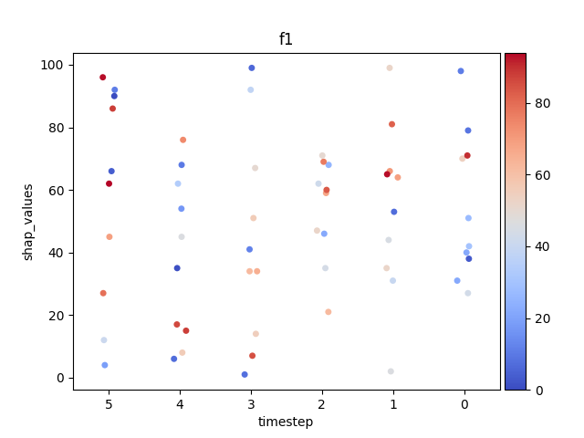
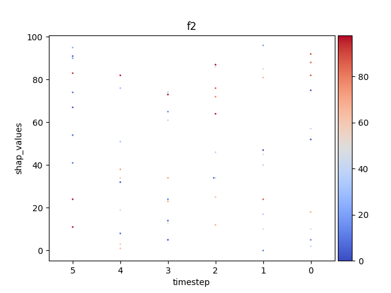

Note
Click here to download the full example code
Shap - Main 05
6 # Libraries
7 import shap
8 import numpy as np
9 import pandas as pd
10 import seaborn as sns
11
12 import matplotlib.pyplot as plt
13 import matplotlib as mpl
14 import matplotlib.colorbar
15 import matplotlib.colors
16 import matplotlib.cm
17
18 from mpl_toolkits.axes_grid1 import make_axes_locatable
19
20 try:
21 __file__
22 TERMINAL = True
23 except:
24 TERMINAL = False
25
26 # ------------------------
27 # Methods
28 # ------------------------
29 def scalar_colormap(values, cmap, vmin, vmax):
30 """This method creates a colormap based on values.
31
32 Parameters
33 ----------
34 values : array-like
35 The values to create the corresponding colors
36
37 cmap : str
38 The colormap
39
40 vmin, vmax : float
41 The minimum and maximum possible values
42
43 Returns
44 -------
45 scalar colormap
46 """
47 # Create scalar mappable
48 norm = mpl.colors.Normalize(vmin=vmin, vmax=vmax, clip=True)
49 mapper = mpl.cm.ScalarMappable(norm=norm, cmap=cmap)
50 # Get color map
51 colormap = sns.color_palette([mapper.to_rgba(i) for i in values])
52 # Return
53 return colormap, norm
54
55
56 def scalar_palette(values, cmap, vmin, vmax):
57 """This method creates a colorpalette based on values.
58
59 Parameters
60 ----------
61 values : array-like
62 The values to create the corresponding colors
63
64 cmap : str
65 The colormap
66
67 vmin, vmax : float
68 The minimum and maximum possible values
69
70 Returns
71 -------
72 scalar colormap
73
74 """
75 # Create a matplotlib colormap from name
76 #cmap = sns.light_palette(cmap, reverse=False, as_cmap=True)
77 cmap = sns.color_palette(cmap, as_cmap=True)
78 # Normalize to the range of possible values from df["c"]
79 norm = mpl.colors.Normalize(vmin=vmin, vmax=vmax)
80 # Create a color dictionary (value in c : color from colormap)
81 colors = {}
82 for cval in values:
83 colors.update({cval : cmap(norm(cval))})
84 # Return
85 return colors, norm
86
87
88 def create_random_shap(samples, timesteps, features):
89 """Create random LSTM data.
90
91 .. note: No need to create the 3D matrix and then reshape to
92 2D. It would be possible to create directly the 2D
93 matrix.
94
95 Parameters
96 ----------
97 samples: int
98 The number of observations
99 timesteps: int
100 The number of time steps
101 features: int
102 The number of features
103
104 Returns
105 -------
106 Stacked matrix with the data.
107
108 """
109 # .. note: Either perform a pre-processing step such as
110 # normalization or generate the features within
111 # the appropriate interval.
112 # Create dataset
113 x = np.random.randint(low=0, high=100,
114 size=(samples, timesteps, features))
115 y = np.random.randint(low=0, high=2, size=samples).astype(float)
116 i = np.vstack(np.dstack(np.indices((samples, timesteps))))
117
118 # Create DataFrame
119 df = pd.DataFrame(
120 data=np.hstack((i, x.reshape((-1, features)))),
121 columns=['sample', 'timestep'] + \
122 ['f%s'%j for j in range(features)]
123 )
124
125 df_stack = df.set_index(['sample', 'timestep']).stack()
126 df_stack = df_stack
127 df_stack.name = 'shap_values'
128 df_stack = df_stack.to_frame()
129 df_stack.index.names = ['sample', 'timestep', 'features']
130 df_stack = df_stack.reset_index()
131
132 df_stack['feature_values'] = np.random.randint(
133 low=0, high=100, size=df_stack.shape[0])
134
135 return df_stack
136
137
138 def load_shap_file():
139 data = pd.read_csv('./data/shap.csv')
140 data = data.iloc[: , 1:]
141 #data.timestep = data.timestep - (data.timestep.nunique() - 1)
142 return data
Lets generate and/or load the shap values.
147 # .. note: The right format to use for plotting depends
148 # on the library we use. The data structure is
149 # good when using seaborn
150 # Load data
151 data = create_random_shap(10, 6, 4)
152 #data = load_shap_file()
153 #data = data[data['sample'] < 100]
154
155 shap_values = pd.pivot_table(data,
156 values='shap_values',
157 index=['sample', 'timestep'],
158 columns=['features'])
159
160 feature_values = pd.pivot_table(data,
161 values='feature_values',
162 index=['sample', 'timestep'],
163 columns=['features'])
164
165 # Show
166 if TERMINAL:
167 print("\nShow:")
168 print(data)
169 print(shap_values)
170 print(feature_values)
Let’s see how data looks like
174 data.head(10)
Let’s see how shap_values looks like
178 shap_values.iloc[:10, :5]
Let’s see how feature_values looks like
182 feature_values.iloc[:10, :5]
Display using shap.summary_plot
The first option is to use the shap library to plot the results.
191 # Let's define/extract some useful variables.
192 N = 4 # max loops filter
193 TIMESTEPS = len(shap_values.index.unique(level='timestep')) # number of timesteps
194 SAMPLES = len(shap_values.index.unique(level='sample')) # number of samples
195
196 shap_min = data.shap_values.min()
197 shap_max = data.shap_values.max()
Now, let’s display the shap values for all features in each timestep.
202 # For each timestep (visualise all features)
203 for i, step in enumerate(range(TIMESTEPS)[:N]):
204 # Show
205 #print('%2d. %s' % (i, step))
206
207 # .. note: First option (commented) is only necessary if we work
208 # with a numpy array. However, since we are using a DataFrame
209 # with the timestep, we can index by that index level.
210 # Compute indices
211 #indice = np.arange(SAMPLES)*TIMESTEPS + step
212 indice = shap_values.index.get_level_values('timestep') == i
213
214 # Create auxiliary matrices
215 shap_aux = shap_values.iloc[indice]
216 feat_aux = feature_values.iloc[indice]
217
218 # Display
219 plt.figure()
220 plt.title("Timestep: %s" % i)
221 shap.summary_plot(shap_aux.to_numpy(), feat_aux, show=False)
222 plt.xlim(shap_min, shap_max)
- 


Now, let’s display the shap values for all timesteps of each feature.
227 # For each feature (visualise all time-steps)
228 for i, f in enumerate(shap_values.columns[:N]):
229 # Show
230 #print('%2d. %s' % (i, f))
231
232 # Create auxiliary matrices (select feature and reshape)
233 shap_aux = shap_values.iloc[:, i] \
234 .to_numpy().reshape(-1, TIMESTEPS)
235 feat_aux = feature_values.iloc[:, i] \
236 .to_numpy().reshape(-1, TIMESTEPS)
237 feat_aux = pd.DataFrame(feat_aux,
238 columns=['timestep %s'%j for j in range(TIMESTEPS)]
239 )
240
241 # Show
242 plt.figure()
243 plt.title("Feature: %s" % f)
244 shap.summary_plot(shap_aux, feat_aux, sort=False, show=False)
245 plt.xlim(shap_min, shap_max)


Note
If y-axis represents timesteps the sort parameter
in the summary_plot function is set to False.
Display using sns.stripplot
Warning
This method seems to be quite slow.
Let’s display the shap values for each feature and all time steps. In contrast to the previous example, the timesteps are now displayed on the x-axis and the y-axis contains the shap values.
262 def add_colorbar(fig, cmap, norm):
263 """"""
264 divider = make_axes_locatable(plt.gca())
265 ax_cb = divider.new_horizontal(size="5%", pad=0.05)
266 fig.add_axes(ax_cb)
267 cb1 = matplotlib.colorbar.ColorbarBase(ax_cb,
268 cmap=cmap, norm=norm, orientation='vertical')
269
270
271 # Loop
272 for i, (name, df) in enumerate(data.groupby('features')):
273
274 # Get colormap
275 values = df.feature_values
276 cmap, norm = scalar_palette(values=values, cmap='coolwarm',
277 vmin=values.min(), vmax=values.max())
278
279 print(df)
280
281 # Display
282 fig, ax = plt.subplots()
283 ax = sns.stripplot(x='timestep',
284 y='shap_values',
285 hue='feature_values',
286 palette=cmap,
287 data=df,
288 ax=ax)
289
290 # Needed for older matplotlib versions
291 cmap = matplotlib.cm.get_cmap('coolwarm')
292
293 # Configure axes
294 plt.title(name)
295 plt.legend([], [], frameon=False)
296 ax.invert_xaxis()
297 add_colorbar(plt.gcf(), cmap, norm)
298
299 # End
300 if int(i) > N:
301 break
302
303 # Show
304 plt.show()

- 


Out:
sample timestep features shap_values feature_values
0 0 0 f0 97 73
4 0 1 f0 17 63
8 0 2 f0 59 46
12 0 3 f0 70 37
16 0 4 f0 3 9
20 0 5 f0 69 24
24 1 0 f0 49 59
28 1 1 f0 37 60
32 1 2 f0 66 50
36 1 3 f0 29 14
40 1 4 f0 17 36
44 1 5 f0 49 35
48 2 0 f0 35 58
52 2 1 f0 77 79
56 2 2 f0 8 60
60 2 3 f0 56 88
64 2 4 f0 43 65
68 2 5 f0 56 81
72 3 0 f0 47 9
76 3 1 f0 20 24
80 3 2 f0 89 46
84 3 3 f0 26 96
88 3 4 f0 45 74
92 3 5 f0 33 66
96 4 0 f0 84 77
100 4 1 f0 83 99
104 4 2 f0 34 4
108 4 3 f0 32 96
112 4 4 f0 81 1
116 4 5 f0 40 71
120 5 0 f0 56 1
124 5 1 f0 56 14
128 5 2 f0 12 97
132 5 3 f0 63 60
136 5 4 f0 53 2
140 5 5 f0 54 93
144 6 0 f0 4 4
148 6 1 f0 26 86
152 6 2 f0 97 46
156 6 3 f0 80 90
160 6 4 f0 35 77
164 6 5 f0 99 71
168 7 0 f0 53 53
172 7 1 f0 32 76
176 7 2 f0 82 56
180 7 3 f0 33 57
184 7 4 f0 41 6
188 7 5 f0 62 42
192 8 0 f0 46 84
196 8 1 f0 46 65
200 8 2 f0 25 30
204 8 3 f0 97 70
208 8 4 f0 50 54
212 8 5 f0 65 67
216 9 0 f0 90 61
220 9 1 f0 77 1
224 9 2 f0 13 68
228 9 3 f0 1 52
232 9 4 f0 68 84
236 9 5 f0 0 95
sample timestep features shap_values feature_values
1 0 0 f1 10 58
5 0 1 f1 59 68
9 0 2 f1 40 10
13 0 3 f1 97 41
17 0 4 f1 99 72
21 0 5 f1 38 45
25 1 0 f1 73 86
29 1 1 f1 93 41
33 1 2 f1 32 72
37 1 3 f1 75 41
41 1 4 f1 7 53
45 1 5 f1 73 47
49 2 0 f1 47 36
53 2 1 f1 5 9
57 2 2 f1 92 38
61 2 3 f1 67 59
65 2 4 f1 52 31
69 2 5 f1 80 38
73 3 0 f1 65 78
77 3 1 f1 40 68
81 3 2 f1 16 96
85 3 3 f1 43 83
89 3 4 f1 50 27
93 3 5 f1 29 47
97 4 0 f1 41 62
101 4 1 f1 36 1
105 4 2 f1 55 21
109 4 3 f1 36 32
113 4 4 f1 66 10
117 4 5 f1 98 7
121 5 0 f1 98 42
125 5 1 f1 42 52
129 5 2 f1 11 95
133 5 3 f1 85 94
137 5 4 f1 19 25
141 5 5 f1 16 33
145 6 0 f1 89 26
149 6 1 f1 9 58
153 6 2 f1 26 82
157 6 3 f1 84 28
161 6 4 f1 90 75
165 6 5 f1 45 92
169 7 0 f1 82 7
173 7 1 f1 61 15
177 7 2 f1 62 7
181 7 3 f1 94 84
185 7 4 f1 2 74
189 7 5 f1 0 90
193 8 0 f1 20 23
197 8 1 f1 88 46
201 8 2 f1 57 94
205 8 3 f1 99 3
209 8 4 f1 64 17
213 8 5 f1 54 19
217 9 0 f1 95 47
221 9 1 f1 70 42
225 9 2 f1 93 11
229 9 3 f1 37 35
233 9 4 f1 94 43
237 9 5 f1 7 16
sample timestep features shap_values feature_values
2 0 0 f2 65 32
6 0 1 f2 14 30
10 0 2 f2 26 39
14 0 3 f2 87 47
18 0 4 f2 55 7
22 0 5 f2 99 57
26 1 0 f2 17 65
30 1 1 f2 24 68
34 1 2 f2 69 2
38 1 3 f2 51 56
42 1 4 f2 37 11
46 1 5 f2 83 43
50 2 0 f2 7 48
54 2 1 f2 5 66
58 2 2 f2 28 34
62 2 3 f2 64 24
66 2 4 f2 11 87
70 2 5 f2 51 36
74 3 0 f2 51 79
78 3 1 f2 1 75
82 3 2 f2 29 59
86 3 3 f2 98 31
90 3 4 f2 99 88
94 3 5 f2 31 77
98 4 0 f2 11 48
102 4 1 f2 63 77
106 4 2 f2 32 50
110 4 3 f2 14 70
114 4 4 f2 5 96
118 4 5 f2 47 80
122 5 0 f2 70 47
126 5 1 f2 22 76
130 5 2 f2 39 63
134 5 3 f2 29 31
138 5 4 f2 95 6
142 5 5 f2 23 25
146 6 0 f2 27 11
150 6 1 f2 24 9
154 6 2 f2 91 77
158 6 3 f2 92 8
162 6 4 f2 32 77
166 6 5 f2 35 53
170 7 0 f2 90 34
174 7 1 f2 23 20
178 7 2 f2 67 9
182 7 3 f2 75 66
186 7 4 f2 0 36
190 7 5 f2 73 37
194 8 0 f2 67 67
198 8 1 f2 5 54
202 8 2 f2 73 92
206 8 3 f2 94 19
210 8 4 f2 0 80
214 8 5 f2 6 76
218 9 0 f2 57 96
222 9 1 f2 93 92
226 9 2 f2 88 0
230 9 3 f2 76 7
234 9 4 f2 40 85
238 9 5 f2 6 11
sample timestep features shap_values feature_values
3 0 0 f3 97 57
7 0 1 f3 7 63
11 0 2 f3 60 67
15 0 3 f3 1 73
19 0 4 f3 18 47
23 0 5 f3 77 37
27 1 0 f3 3 45
31 1 1 f3 38 78
35 1 2 f3 88 67
39 1 3 f3 83 18
43 1 4 f3 29 7
47 1 5 f3 18 59
51 2 0 f3 12 90
55 2 1 f3 53 1
59 2 2 f3 61 74
63 2 3 f3 69 2
67 2 4 f3 91 27
71 2 5 f3 77 5
75 3 0 f3 6 61
79 3 1 f3 50 4
83 3 2 f3 49 45
87 3 3 f3 77 6
91 3 4 f3 2 2
95 3 5 f3 94 70
99 4 0 f3 93 24
103 4 1 f3 46 10
107 4 2 f3 61 72
111 4 3 f3 5 5
115 4 4 f3 1 70
119 4 5 f3 80 18
123 5 0 f3 37 67
127 5 1 f3 56 55
131 5 2 f3 42 33
135 5 3 f3 69 42
139 5 4 f3 40 62
143 5 5 f3 80 67
147 6 0 f3 31 19
151 6 1 f3 8 7
155 6 2 f3 59 74
159 6 3 f3 70 11
163 6 4 f3 32 9
167 6 5 f3 95 75
171 7 0 f3 23 88
175 7 1 f3 16 48
179 7 2 f3 75 13
183 7 3 f3 89 69
187 7 4 f3 19 58
191 7 5 f3 21 78
195 8 0 f3 9 46
199 8 1 f3 69 89
203 8 2 f3 25 34
207 8 3 f3 5 33
211 8 4 f3 77 64
215 8 5 f3 36 21
219 9 0 f3 62 3
223 9 1 f3 51 82
227 9 2 f3 46 28
231 9 3 f3 28 37
235 9 4 f3 97 10
239 9 5 f3 21 64
Display using sns.swarmplot
Let’s display the shap values for each timestep.
318 # Loop
319 for i, (name, df) in enumerate(data.groupby('features')):
320
321 # Get colormap
322 values = df.feature_values
323 cmap, norm = scalar_palette(values=values, cmap='coolwarm',
324 vmin=values.min(), vmax=values.max())
325
326 # Display
327 fig, ax = plt.subplots()
328 ax = sns.swarmplot(x='timestep',
329 y='shap_values',
330 hue='feature_values',
331 palette=cmap,
332 data=df,
333 size=2,
334 ax=ax)
335
336 # Needed for older matplotlib versions
337 cmap = matplotlib.cm.get_cmap('coolwarm')
338
339 # Configure axes
340 plt.title(name)
341 plt.legend([], [], frameon=False)
342 ax.invert_xaxis()
343 add_colorbar(plt.gcf(), cmap, norm)
344
345 # End
346 if int(i) > N:
347 break
348
349 # Show
350 plt.show()
351
352
353
354
355
356
357
358 """
359 sns.set_theme(style="ticks")
360
361 # Create a dataset with many short random walks
362 rs = np.random.RandomState(4)
363 pos = rs.randint(-1, 2, (20, 5)).cumsum(axis=1)
364 pos -= pos[:, 0, np.newaxis]
365 step = np.tile(range(5), 20)
366 walk = np.repeat(range(20), 5)
367 df = pd.DataFrame(np.c_[pos.flat, step, walk],
368 columns=["position", "step", "walk"])
369 # Initialize a grid of plots with an Axes for each walk
370 #grid = sns.FacetGrid(df_stack, col="walk", hue="f", palette="tab20c",
371 # col_wrap=4, height=1.5)
372
373 grid = sns.FacetGrid(df_stack, hue="f",
374 palette="tab20c", height=1.5)
375
376 # Draw a horizontal line to show the starting point
377 grid.refline(y=0, linestyle=":")
378
379 # Draw a line plot to show the trajectory of each random walk
380 grid.map(plt.plot, "t", "value", marker="o")
381
382 # Adjust the tick positions and labels
383 grid.set(xticks=np.arange(5), yticks=[-3, 3],
384 xlim=(-.5, 4.5), ylim=(-3.5, 3.5))
385
386 # Adjust the arrangement of the plots
387 grid.fig.tight_layout(w_pad=1)
388
389 """
390
391
392 #plt.show()


- 

Out:
'\nsns.set_theme(style="ticks")\n\n# Create a dataset with many short random walks\nrs = np.random.RandomState(4)\npos = rs.randint(-1, 2, (20, 5)).cumsum(axis=1)\npos -= pos[:, 0, np.newaxis]\nstep = np.tile(range(5), 20)\nwalk = np.repeat(range(20), 5)\ndf = pd.DataFrame(np.c_[pos.flat, step, walk],\n columns=["position", "step", "walk"])\n# Initialize a grid of plots with an Axes for each walk\n#grid = sns.FacetGrid(df_stack, col="walk", hue="f", palette="tab20c",\n# col_wrap=4, height=1.5)\n\ngrid = sns.FacetGrid(df_stack, hue="f",\n palette="tab20c", height=1.5)\n\n# Draw a horizontal line to show the starting point\ngrid.refline(y=0, linestyle=":")\n\n# Draw a line plot to show the trajectory of each random walk\ngrid.map(plt.plot, "t", "value", marker="o")\n\n# Adjust the tick positions and labels\ngrid.set(xticks=np.arange(5), yticks=[-3, 3],\n xlim=(-.5, 4.5), ylim=(-3.5, 3.5))\n\n# Adjust the arrangement of the plots\ngrid.fig.tight_layout(w_pad=1)\n\n'
Display using sns.FacetGrid
399 #g = sns.FacetGrid(df_stack, col="f", hue='original')
400 #g.map(sns.swarmplot, "t", "value", alpha=.7)
401 #g.add_legend()
Display using shap.beeswarm
409 # REF: https://github.com/slundberg/shap/blob/master/shap/plots/_beeswarm.py
410 #
411 # .. note: It needs a kernel explainer, and while it works with
412 # common kernels (plot_main07.py) it does not work with
413 # the DeepKernel for some reason (mask related).
Total running time of the script: ( 0 minutes 3.674 seconds)